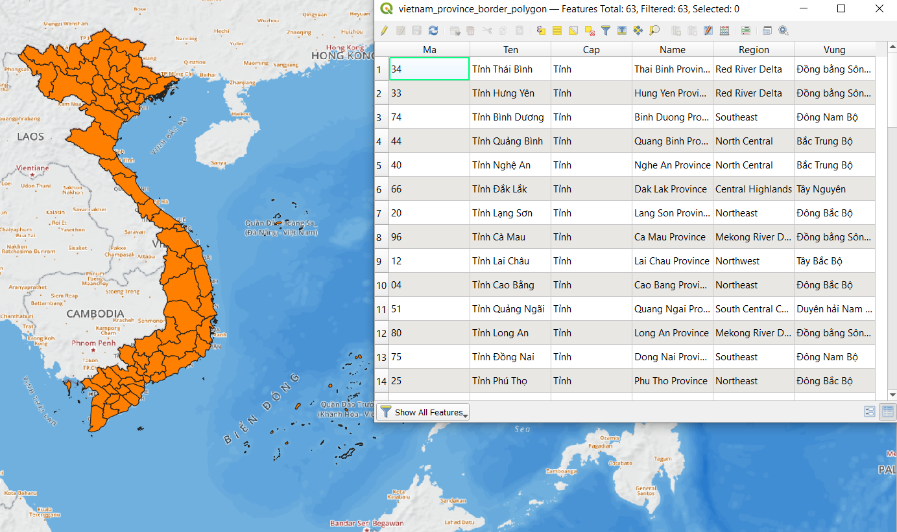

Module 0 – Giới thiệu sơ lược về GIS
Tác giả: Ben Hur
Biên dịch và bản địa hoá: Quách Đồng Thắng
Giới thiệu chung
Module này giới thiệu sơ lược các khái niệm về địa lý cần thiết để làm việc với các hệ thống thông tin địa lý (Geographic Informations System - GIS). Kết thúc Module này, người học sẽ nắm được các khái niệm sau đây:
- Phép chiếu bản đồ
- Hệ quy chiếu tọa độ
- Khuôn dạng dữ liệu không gian (vector, raster)
- Các thành phần và đặc điểm của GIS
- Ứng dụng của GIS
- Một số ứng dụng GIS trong thực tế
Ngoài ra, Module này cũng sẽ giới thiệu các khái niệm chính về phần mềm mã nguồn mở tự do (Free and Open Source Software - FOSS) và các ứng dụng Free and Open Source Software for Geospatial (FOSS4G)
Các công cụ và tài nguyên cần thiết
Các công cụ và tài nguyên cần thiết cho module này gồm:
- Máy tính
- Kết nối Internet
Yêu cầu về kỹ năng
- Kiến thức cơ bản về vận hành máy tính
Tài liệu tham khảo
- A Gentle Introduction to GIS - https://docs.qgis.org/3.16/en/docs/gentle_gis_introduction/index.html
- QGIS User Guide - https://docs.qgis.org/3.16/en/docs/user_manual/
- QGIS Training Manual - https://docs.qgis.org/3.16/en/docs/training_manual/index.html
- QGIS website - https://qgis.org/en/site/
- OSGeo website - https://www.osgeo.org/
- OSGeoLive website - https://live.osgeo.org/en/index.html
- What is free software? - https://www.gnu.org/philosophy/free-sw.en.html
- Open source definition - https://opensource.org/osd
Giới thiệu chuyên đề
Hãy bắt đầu bằng một ví dụ:
Bạn có thể đã từng nghe cụm từ “Tất cả bản đồ đều nói dối”, hoặc đã thấy một bài đăng trên mạng xã hội tuyên bố rằng “Bản đồ thế giới mà bạn đã biết trong đời đều sai!”. Tuy nhiên, không phải các bản đồ này cố tình “nói dối”, mà chỉ là chúng không bao giờ có thể cho bạn thấy toàn bộ sự thật. Một ví dụ là kích thước tương đối giữa các quốc gia trên bản đồ. The True Size Of (https://thetruesize.com/) là một ứng dụng bản đồ trên web thú vị cho thấy kích thước tương đối của các quốc gia bị biến dạng như thế nào trong một trong những bản đồ phổ biến nhất mà chúng ta sử dụng (bản đồ sử dụng phép chiều Mercator). Nó cũng cho thấy mô5t số ví dụ về các loại dữ liê5u không gian mà chúng ta sẽ tìm hiểu thêm trong Module này. Hãy sử dụng ứng dụng web này để so sánh kích thước của nước bạn với các quốc gia khác.

Phân tích các khái niệm
Thế thì tại sao lại xả ra trường hợp này? Như bạn sẽ học trong Module này, rất khó để biểu diễn hình dạng ba chiều của trái đất trên một tờ giấy phẳng. Để làm điều đó, các nhà lập bản đồ sử dụng phép chiếu bản đồ (map projection) để chiếu các điểm trên bề mặt 3 chiều của trái đất lên mặt phẳng. Tuy nhiên, bằng cách làm như vậy sẽ phát sinh biến dạng hình học (distortion). Biến dạng này có thể về hình dạng, kích thước, hướng và khoảng cách của cái đối tượng trên bản đồ. Tất cả các bản đồ đều có ít nhất một trong các biến dạng trên. Do đó, bản đồ không bao giờ có thể cho thấy toàn bộ sự thật về trái đất.
Trong ứng dụng Web nêu trên, bản đồ nền không thay đổi về mặt kích thước (bản đồ có màu xám nhạt) là một ví dụ về dữ liệu raster. Dữ liệu raster biểu diễn các đối tượng của thế giới thực bằng điểm ảnh (pixel), giống như ảnh chụp. Trong khi đó, hình dạng của các quốc gia mà chúng ta có thể di chuyển là ví dụ về dữ liệu vector. Dữ liệu vector, khác với dữ liệu raster, biểu diễn thế giới thực bằng các đối tượng rời rạc như điểm, đường và vùng.
Nội dung chính
Phase 1: Bản đồ và Tọa độ
Khi nghĩ về trái đất ngày nay, chúng ta thường hình dung ra một khối cầu với màu xanh nước biển, xanh lá cây, trắng và nâu nằm lơ lửng trong không gian. Đây là lí do vì sao cách truyền thống để mô hình hóa trái đất là sử dụng các quả địa cầu.
 Hình 0.1. Blue Marble (https://commons.wikimedia.org/wiki/Earth#/media/File:The_Blue_Marble.jpg)
Hình 0.1. Blue Marble (https://commons.wikimedia.org/wiki/Earth#/media/File:The_Blue_Marble.jpg)
|
 Hình 0.2. de l'Isle globe (1765) (https://commons.wikimedia.org/wiki/Globe#/media/File:3quarter_globe.jpg)
Hình 0.2. de l'Isle globe (1765) (https://commons.wikimedia.org/wiki/Globe#/media/File:3quarter_globe.jpg)
|
{kind=link}
{kind=link}
Tuy nhiên, mặc dù quả địa cầu có thể mô tả hầu hết các đặc điểm của trái đất, nhưng nó có 02 nhược điểm chính:
- Quả địa cầu cồng kềnh và khó mang theo bên mình.
- Quả địa cầu chỉ hữu dụng ở tỉ lệ nhỏ (ví dụ tìm vị trí của các quốc gia, vị trí tương đối giữa các thành phố,…). Chúng sẽ gần như vô dụng đối với các hoạt động yêu cầu tỉ lệ lớn hoặc chi tiết cao (như điều hướng di chuyển trong thành phố)
Điều này dẫn tới sự xuất hiện của bản đồ. Bản đồ khắc phục 02 nhược điểm của quả địa cầu bằng cách biểu diễn trái đất dưới dạng một mặt phẳng. Nhờ đó, bản đồ trở nên di động và phù hợp với nhiều mục đích sử dụng. Tuy nhiên, bản đồ cũng có nhược điểm của nó. Trong quá trình chuyển đổi một vật thể 3 chiều (quả địa cầu) sang 2 chiều (bản đồ), sẽ xuất hiện các biến dạng, khiến cho các bản đồ này không thể cùng lúc bảo toàn hoàn hảo các đặc điểm khác nhau của trái đất như hình dạng, diện tích, hướng,…
Phép chiếu bản đồ
Phép chiếu bản đồ được sử dụng để biến trái đất (hoặc quả địa cầu) thành một mặt phẳng để tạo bản đồ. Quá trình chuyển đổi này làm phát sinh các biến dạng.

Bạn có thể nghĩ trái đất như một quả cam. Nếu bạn lột vỏ, bạn có thể trải phẳng nó nhưng bạn không bao giờ làm cho nó phẳng hoàn toàn. Bạn sẽ luôn gặp một trong các vấn đề sau:
- Shearing - Sự kéo dài của lớp vỏ (hoặc bề mặt) theo một hoặt nhiều hướng
- Tearing - Sự tách rời hoặc đứt gãy của bề mặt (hoặc bề mặt)
- Compressing - Sự rút ngắn và co lại của lớp vỏ (hoặc bề mặt)
Vì các vấn đề này, tất cả các bản đồ đều có một hoặc nhiều các loại biến dạng sau:
- Hình dạng - Shape
- Diện tích - Area
- Khoảng cách - Distance
- Hướng - Direction
Các phép chiếu bản đồ có thể bảo toàn (không làm biến dạng) một hoặc nhiều các yếu tố này nhưng không bao giờ cùng lúc bảo toàn tất cả. Thay vào đó, chúng có thể có một sự thoả hiệp sao cho các biến dạng được cân bằng và giảm thiểu cho tất cả các yếu tố. Điều này là do bản chất của các yếu tố.
Các yếu tố chính như Shape và Area là loại trừ lẫn nhau và không thể được bảo toàn đồng thời. Trong khi đó, các yếu tố phụ như Distance và Direction không thể chính xác ở mọi nơi trên bản đồ.
Để chọn sử dụng phép chiếu bản đồ nào, điều quan trọng là phải xem xét mục đích của bản đồ. Ví dụ, nếu bạn muốn thực hiện các phân tích dựa trên diện tích, tốt nhất là sử dụng phép chiếu bản đồ bảo toàn diện tích.
Có một số cách phân loại phép chiếu bản đồ. Cách thứ nhất là dự trên yếu tố được bảo toàn.
- Phép chiếu bảo giác (Conformal or Orthomorphic) bảo toàn hình dạng hoặc góc. Các phép chiếu này sử dụng cho mục đích điều hướng hoặc khí tượng. Hình dạng được bảo toàn nhưng diện tích bị thay đổi. Diện tích càng lớn thì sự thay đổi càng lớn.
- Phép chiếu đồng diện tích (Equal-area or Authalic) bảo toàn tỉ lệ hoặc diện tích tương đối giữa các đối tượng trên bản đồ. Đối với phép chiếu này, khu vực lập bản đồ càng rộng lớn thì càng chính xác.
- Phép chiếu đồng khoảng cách (Equidistant) bảo toàn khoảng cách của các đường bắt nguồn từ một hoặc hai điểm trên bản đồ, hoặc có tỉ lệ thích hợp dọc theo một hoặc nhiều đường.
- Phép chiếu phương vị (Azimuthal) bảo toàn hướng từ một hoặc hai điểm trên bản đồ. Các phép chiếu này hữu dụng cho việc lập bản đồ các tuyến đường giữa các cảng hàng không và cảng biển.
Một phép chiếu bản đồ có thể bảo toàn nhiều hơn một yếu tố (ví dụ phép chiếu phương vị - đồng khoảng cách có thể bảo toàn hướng và khoảng cách từ một hoặc hau điểm trên bản đồ), nhưng không thể bảo toàn tất cả các yếu tố, được thể hiện trong bảng sau:
| Conformal | Equal Area | Equidistant | Azimuthal | |
Conformal |
- | N | N | Y |
Equal Area |
N | - | N | Y |
Equidistant |
N | N | - | Y |
Azimuthal |
Y | Y | Y | - |
Bảng: Có thể bảo toàn cùng lúc 02 yếu tố trên bản đồ?
Có cách phân loại khác về phép chiếu bản đồ không bảo toàn bất cứ yếu tố nào nhưng cố gắng giảm thiểu tất cả các biến dạng của bản đồ. Các phép chiếu này được gọi là phép chiếu Thoả hiệp hoặc Lỗi tối thiểu (các bản đồ không bảo toàn cả hình dạng và diện tích được gọi là Aphylactic).
Cách thể hiện các biến dạng này là sử dụng Tissot’s indicatrix, thể hiện các biến dạng cục bộ thông qua các hình tròn và hiển thị sự biến đổi của các hình tròn này trên bản đồ.

Hình 0.3. Tissot’s indicatrix của phép chiếu bảo giác. Các hình tròn được bảo toàn hình dạng trên toàn bản đồ, nhưng diện tích tăng lên khi di chuyển từ xích đạo về hai cực.

Hình 0.4. Tissot’s indicatrix của phép chiếu đồng diện tích. Các hình tròn có xu hướng trở thành ellipse nhưng diện tích được bảo toàn.

Hình 0.5. Tissot’s indicatrix của phép chiếu đồng khoảng cách. Chiều cao của các hình tròn bằng nhau, nghĩa là tỉ lệ/ khoảng cách dọc kinh tuyến được bảo toàn.

Hình 0.6. Tissot’s indicatrix của phép chiếu phương vị đồng khoảng cách. Các hình tròn hướng về tâm của bản đồ và chiều cao của các hình tròn là như nhau.
Một cách khác để phân loại phép chiếu bản đồ là sử dụng bề mặt có thể khai triển được (developable surface). Một mặt được gọi là có thể khai triển được nếu nó có thể được trải phẳng mà không bị biến dạng. Các bề mặt thông dụng gồm: Hình trụ - Cylinders (Hình 0.7), Hình nón - Cones (Hình 0.8), và mặt phẳng - Planes (Hình 0.9)

Hình 0.7. Phép chiều hình trụ có các kinh tuyến (longitude) và vĩ tuyến (latitude) giao nhau vuông góc và khoảng cách giữa các kinh tuyến bằng nhau.

Hình 0.8. Phép chiếu hình nón có các kinh tuyến thẳng, giao nhau tại một điểm ở các cực. Vĩ tuyến là các cung tròn (arcs)

Hình 0.9. Phép chiếu phẳng (thường dùng trong các phép chiếu phương vị) có kinh tuyến thẳng giống với phép chiếu hình nón nhưng các vĩ tuyền là hình tròn thay vì cung tròn.
Có vô số các mặt khai triển có thể được sử dụng để biến quả địa cầu thành bản đồ. Chúng có thể là các biến thể của các bề mặt thông dụng như trên như phép chiếu hình trụ giả (pseudo-cylindrical), hình nón giả (pseudo-conic) hoặc chúng có thể là các bề mặt duy nhất và hoàn toàn khác nhau như Dymaxion sử dụng một khối icosahedron (khối đa diện với 20 mặt), hoặc phép chiếu Cahill-Keyes sử dụng khối octahedron (khối bát diện).
Một phép chiếu bản đồ cũng có thể được phân loại theo hướng chiếu (Hình 0.10), hay nói cách khác là vị trí của mặt khai triển so với quả địa cầu: bình thường, ngang hoặc xiên.

Hình 0.10. Các hướng chiếu của phép chiếu bản đồ
Hệ quy chiếu tọa độ
Một hệ quy chiếu tọa độ (Coordinate Reference System - CRS) được dùng để xác định vị trí của đối tượng trên bề mặt của trái đấtt thông qua tọa độ. Có 02 loại hệ quy chiếu tọa độ:
- Hệ quy chiếu tọa độ địa lý (Geographic Coordinate Reference Systems) sử dụng kinh độ và vĩ độ (đơn vị là độ) làm toạ độ để tham chiếu đến vị trí.
- Hệ quy chiếu tọa độ phẳng (Projected Coordinate Reference Systems) sử dụng các đơn vị tuyến tính (m, feet, km) của eastings và northings làm tọa độ.
Kiến thức về hệ quy chiếu tọa độ là quan trọng, bởi vì ngay cả khi hai bản đồ (hoặc lớp dữ liệu) hiển thị cùng một khu vực, tọa độ của các vị trí của các bản đồ này sẽ khách nhau nếu chúng sử dụng các CRS khác nhau.
Lấy ví dụ sau: Bản đồ A và bản đồ B thể hiện cùng một khu vực và phạm vi. Về cơ bản các bản đồ này là một. Chỉ có điểm khác nhau là CRS mà chúng sử dụng. Bản đồ A sử dụng CRS X và bản đồ B sử dụng CRS Y. Giả sử chúng ta có tọa độ của điểm Point 1 là (10,10) từ bản đồ A. Nếu chúng ta đến tọa độ (10,10) trên bản đồ B, có khả năng là điểm Point 1 không nằm tại vị trí đó do bản đồ B sử dụng CRS khác. Hoặc nếu bạn chồng lớp các bản đồ này lên nhau sử dụng một hệ tham chiếu tọa độ chung, các đối tượng trên 02 bản đồ này sẽ không trùng khớp nhau. Kiến thức về CRS là quan trọng trong bất kỳ một hệ thống GIS nào.
Trước QGIS phiên bản 3.X, QGIS có một tùy chọn để kích hoạt chức năng “OTF” - “On-The-Fly Transformation”. Chức năng này cho phép các lớp dữ liệu có CRS khác nhau được chuyển đổi ngay trong khi load để hiển thị trên khung nhìn bản đồ như thể chúng cò cùng CRS. Từ QGIS 3.X trở đi, tùy chọn này là mặc định của QGIS. QGIS cũng chuyển đổi CRS tự động cho các tác vụ xử lý dữ liệu. Điều này rất quan trọng vì nếu các lớp dữ liệu không cùng một CRS, kết quả các truy vấn và xử lý không gian như spatial joins, clips,… có thể không chính xác.
Bạn có thể thấy rằng một số CRS được tham chiếu bằng mã EPSG. Mã này được quản lý trong EPSG Geodetic Parameter Dataset, là cơ quan đăng ký các datum, CRS, ellipsoid, các phép chuyển đổi tọa độ và các đơn vị đo lường liên quan. Hầu hết các phần mềm GIS, bao gồm QGIS tham chiếu đến EPSG code để xác định CRS, phép chiếu và thực hiện chuyển đổi giữa các hệ toạ độ.
Các EPSG code phổ biến:
- EPSG:4326 - WGS 84, Hệ thống tọa độ kinh vĩ, được sử dụng bởi Hệ thống Định vị Toàn cầu (GPS) cũng như các dịch vụ điều hướng và bản đồ khác.
- EPSG:3857 - Web Mercator projection được sử dụng bởi các dịch vụ bản đồ như OpenStreetMap và Google Maps
- EPSG:3405, EPSG:3406 - WGS 84 / Universal Transverse Mercator (UTM) Zone 48N và 49N, tương ứng múi chiếu 6 độ cho đất liền (48N), khu vực gần biển và hải đảo (49N) của Việt Nam ở Hệ toạ độ Vn-2000.
- EPSG:9205 –> EPSG:9218 - Múi chiếu 3 độ, kinh tuyến trục địa phương các tỉnh thành ở Việt Nam ở Hệ toạ độ Vn-2000.
Câu hỏi
- Loại phép chiếu bản đồ nào là tốt nhất cho các trường hợp sử dụng sau?
- Bản đồ tổng quát với yêu cầu hình thức đẹp mắt – compromise
- Bản đồ hiển thị phân tích trên một đơn vị diện tích ở các vị trí khác nhau – equal-area or authalic
- Bản đồ hiển thị so sánh của một vùng đệm 10km ở các vị trí khác nhau – equidistant
- Loại hệ quy chiếu tọa độ nào (hệ quy chiếu tọa độ địa lý hoặc hệ quy chiếu tọa độ phẳng) là tốt nhất cho các trường hợp sử dụng sau?
- Hiển thị vị trí của các điểm sử dụng GPS – Geographic Coordinate Reference System
- b. Tính toán khoảng cách giữa hai điểm – Projected Coordinate Reference Systme
- True or False – Có thể đồng thời bảo toàn các yếu tố sau trong cùng một bản đồ?:
- Diện tích và hình dạng – False
- b. Khoảng cách và hướng – True
Phase 2: Các kiểu dữ liệu không gian
Về cốt lõi, một hệ thống thông tin địa lý (GIS) phải có khả năng mô hình hóa các đối tượng, thông tin và hiện tượng trong thế giới thực, như ranh giới thửa đất, sông hồ, đường phố, nhiệt độ,…Điều này được thực hiện thông qua các mô hình dữ liệu không gian.
Mô hình dữ liệu không gian bao gồm 2 thành phần chính, khi được kết hợp sẽ mô hình hóa được thế giới thực. Hai thành phần này gồm:
- Đối tượng không gian (hình học)
- Thuộc tính

Có hai loại mô hình dữ liệu không gian chính: raster và vector. Mặc dù bất cứ đối tượng trong thế giới thực nào cũng có thể được biểu diễn bởi một trong hai mô hình dữ liệu này, nhưng tùy theo đặc điểm của đối tượng trong thế giới thực mà sử dụng mô hình dữ liệu phù hợp hơn.
Dữ liệu raster
Dữ liệu raster được sử dụng tốt nhất để biểu diễn các hiện tượng liên tục như độ cao hoặc nhiệt độ.
Raster là một biểu diễn các đối tượng trong thế giới thực dựa trên cell hoặc pixel, bao gồm các dòng và cột các cell hoặc pixel, biểu diễn một khu vực địa lý (giống như một bức ảnh). Giá trị của cell là giá trị của một thuộc tính trong khu vực địa lý đó. Kích thước của khu vực phụ thuộc và độ phân giải không gian của raster.
Raster khá hữu dụng cho việc lập mô hình độ phù hợp của một địa điểm vì bạn có thể kết hợp các raster thông qua các phép toán (raster algebra)

Hình 0.12. Một raster chứa các pixel cùng kích thước trong các dòng và cột.
Một pixel chỉ có thể chứa một giá trị tại một thời điểm. Do đó, một raster chỉ có thể mô hình hóa một đối tượng hoặc hiện tượng tại một thời điểm.
Dữ liệu vector
Dữ liệu vector là lựa chọn tốt nhất để biểu diễn các đối tượng rời rạc..
Dữ liệu vector có 3 dạng chính: điểm (point), đường (line) và vùng (polygon). Nó chính xác hơn raster bởi vì các điểm, đường và vùng được mô hình hóa sử dụng các tọa độ được xác định rõ ràng, do đó biểu diễn các đối tượng rời rạc tốt hơn mô hình raster.
Vector thường được sử dụng khi cần độ dài, diện tích và khoảng cách chính xác. Vector cũng hữu dụng khi thực hiện các bài toàn phân tích mạng (ví dụ: bài toán tìm đường đi ngắn nhất)

Hình 0.13. Một vector layer chứa các đối tượng không gian với thuộc tính tương ứng.
So sánh với pixel của raster, một đối tượng vector có thể chứa nhiều giá trị cùng lúc. Các giá trị này được chứa trong các cột trong bảng thuộc tính, và mỗi đối tượng được chứa trên một dòng.
Câu hỏi
- Mô hình dữ liệu nào biểu diễn tốt nhất các sự vật/ hiện tượng sau: 1.
- Đường phố
- Nhà
- Mật độ dân số
- Nguy cơ lũ lụt
Phase 3: Hệ thống thông tin Địa lý - Geographic Information System (GIS)
Thông tin địa lý và vị trí đã trở nên phổ biến trong thể kỷ 21 trên mọi lĩnh vực. Chúng ta có vệ tinh, máy bay và cả máy bay không người lái thương mại có khả năng thu thập một lượng lớn dữ liệu thô trên các khu vực rộng lớn trong khoảng thời gian dài. Ngoài ra còn có các cảm biến thu thập và tập hợp thông tin vị trí như GPS và các ứng dụng khác trên điện thoại và các thiết bị điện tử.
Với tất cả các dữ liệu này, việc biết cách quản lý, xử lý và trình bày chúng một cách hợp lý là điều bắt buộc. Điều này được hiện thực với Hệ thống thông tin Địa lý - GIS
GIS là một công cụ/ bộ khung/ hệ thống cho phép chúng ta làm việc với thông tin không gian địa lý và các thông tin (phi không gian) tương ứng. Cụ thể là, một hệ GIS có khả năng:
- Thu thập, lưu trữ, chỉnh sửa, thao tác, hay nói chung là quản lý dữ liệu không gian
- Phân tích dữ liệu sử dụng thành phần không gian (vị trí của dữ liệu) và thuộc tính (giá trị của dữ liệu).
- Trình bày dữ liệu và phân tích thông tin có ý nghĩa thông qua bản đồ, biểu đồ, đồ thị và các phương pháp trực quan khác.
GIS không chỉ là lập bản đồ. Mặc dù việc thành lập bản đồ là một trong những khía cạnh quan trọng và phổ biến của GIS, nó chỉ là một trong nhiều thành phần và tính năng của GIS. Chúng ta có thể xem một bộ khung GIS hiện đại bao gồm:
- Dữ liệu – đề cập đến các phần thông tin được sử dụng bởi GIS, có thể có hoặc không có thông tin vị trí (ví dụ như tên cửa hàng, vị trí cửa hàng).
- Công nghệ - bao gồm thành phần phần cứng và phần mềm – máy móc, thiết bị và máy tính với các ứng dụng phần mềm được sử dụng để thực hiện các tác vụ không gian địa lý.
- Phương pháp và phân tích – đề cập đến khía cạnh khoa học và toán học trong GIS, cho phép thực hiện các truy vấn và tính toán trên cả dữ liệu không gian và phi không gian (thuộc tính).
- Trực quan – mặc dù tương tự như phương pháp và phân tích, trực quan có thể được xem là một thành phần riêng biệt vì chúng đề cập cụ thể đến phương tiện để trình diễn sinh động dữ liệu GIS. Trực quan không chỉ bao gồm bản đồ, mặc dù đó là phổ biến, mà còn là các bảng dữ liệu, biểu đồ, đồ thị,…
- Con người – đây là những người và/ hoặc nhóm người tham gia vào việc sử dụng, phát triển, đào tạo và bảo trì GIS.
Tất cả các thành phần của một bộ khung GIS hiện đại – từ dữ liệu đến con người – là các thành phần không thể thiếu để đảm bảo một hệ GIS thành công.
Câu hỏi
- True or False:
- GIS chỉ có thể được sử dụng với dữ liệu không gian – False
- Một bản đồ luôn là đầu ra khi sử dụng GIS – False
- Học GIS thì khó và đắt đỏ – False
Phase 4 (bổ sung): Phần mềm GIS mã nguồn mở tự do (Free and Open Source Software for Geospatial - FOSS4G)
QGIS chỉ là một ví dụ của ứng dụng Free and Open Source Software for Geospatial (FOSS4G). Các ví dụ khác của FOSS4G gồm GRASS, PostGIS, GeoServer, GeoNode,…Các ứng dụng FOSS4G này là các công cụ tuyệt vời để làm việc không chỉ vì chúng đáng tin cậy mà còn tự do và mã nguồn mở, chúng có ít rào cản hơn để tiếp cận và khả năng tùy chỉnh cao theo nhu cầu sử dụng. Bạn có thể tìm thấy một vài ứng dụng FOSS4G cho mỗi nhu cầu sử dụng và cho mỗi thành phần của bộ khung GIS.
 applications stack")
Hình 0.14. Một ví dụ về open source geospatial (or FOSS4G) stack (from Simon Nitz (https://twitter.com/si_nitz?lang=en))
Phần mềm tự do - Free Software
Free as in freedom not just free food.
Phần mềm tự do là phần mềm tuân thủ bốn quyền tự do cơ bản của phần mềm tự do, gồm:
- Tự do chạy phần mềm theo ý muốn, cho bất kỳ mục đích nào (Quyền tự do 0)
- Tự do nghiên cứu cách thức hoạt động của phần mềm, và thay đổi nó theo ý muốn (Quyền tự do 1). Truy cập vào mã nguồn là điều kiện tiên quyết cho việc này.
- Tự do phân phối lại các bản sao để bạn có thể giúp đỡ những người khác (Quyền tự do 2).
- Tự do phân phối các bản sao của các phiên bản sửa đổi của bạn cho những người khác (Quyền tự do 3). Bằng việc này, bạn có thể cho cả cộng đồng cơ hội hưởng lợi từ những chỉnh sửa của bạn. Truy cập vào mã nguồn là điều kiện tiên quyết cho quyền này.
Mã nguồn mở - Open source
Phần mềm mã nguồn mở là các phần mềm có giấy phép cung cấp quyền sử dụng miễn phí và tái sử dụng phần mềm cùng với quyền truy cập mở vào mã nguồn. Theo quy ước, các giấy phép mã nguồn mở tuân thủ định nghĩa mã nguồn mở (Open Source Definition) của tổ chức Sáng kiến nguồn mở (Open Source Initiative). Mã nguồn mở không chỉ bảo đảm quyền truy cập tự do vào phần mềm và mã nguồn, mà còn là khả năng tái phân phối phần mềm không mất thêm chi phí nào.
Do bản chất mở của phần mềm mã nguồn mở, nó cũng là một mô hình phát triển phần mềm tuyệt vời để mọi người tự do cập nhật, nâng cấp, chỉnh sửa và chia sẻ các phiên bản chỉnh sửa của mình cho cộng đồng.
OSGeo
Có nhiều ứng dụng GIS mã nguồn mở và đôi khi phần khó nhất là biết bắt đầu tiếp cận với các ứng dụng này ở đâu và như thế nào. Rất may, tổ chức Không gian Địa lý Nguồn mở (Open Source Geospatial Foundation - OSGeo) (https://www.osgeo.org/) đã có mặt để giúp thúc đẩy việc áp dụng công nghệ không gian địa lý trên toàn cầu và hỗ trợ sự phát triển của các công nghệ này.
Câu hỏi
N/A
Nếu bạn muốn tìm hiểu kỹ hơn:
Nếu bạn muốn nhanh chóng dùng thử các ứng dụng FOSS4G, bạn có thể dùng thử OSGeoLive (https://live.osgeo.org/en/index.html), là một bản phân phối trên hệ điều hành Linux được cài đặt sẵn QGIS, GRASS và các ứng dụng FOSS4G khác.
Để thực hành các kỹ năng vừa học,…
N/A
Mẹo
N/A